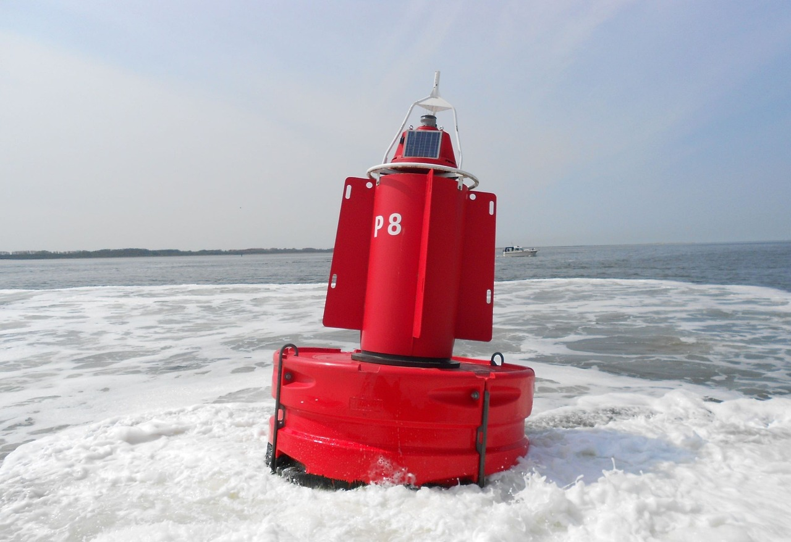

Acompanhe, em tempo real, a saúde dos nossos oceanos.
QUAIS DESAFIOS ENFRENTAMOS?
O aumento de plástico e lixo nos oceanos é alarmante. Falta informação sobre a poluição marinha, dificultando ações de mitigação.
Há uma carência significativa em monitorar vastas áreas oceânicas. População e empresas precisam de dados acessíveis para promover sustentabilidade.
Como a tecnologia pode resolver?
NOSSA TECNOLOGIA
Usaremos bóias de monitoramento equipadas com sensores e alimentadas por energia solar. Essas bóias serão fixas e móveis, ligadas a navios para medições abrangentes.
Energia Limpa

OBJETIVOS
Queremos reduzir a poluição marinha, monitorar áreas extensas e fornecer dados acessíveis. A solução visa aumentar a conscientização e promover o desenvolvimento sustentável.
- Poluição
+ Dados
+ Sustentabilidade
PÚBLICO IMPACTADO
A população em geral e empresas serão impactadas, recebendo informações sobre a qualidade da água. Esperamos engajar essas partes na conservação marinha.
Pessoas
+
Empresas
=
Dados
Sustentabilidade
BENEFÍCIOS
Oferecemos monitoramento contínuo da qualidade da água e controle de resíduos. A solução promove a saúde dos oceanos e apoia práticas sustentáveis.
Monitoramento
Controle
BENEFÍCIOS DIÁRIOS
Facilita o acesso a dados de qualidade da água, ajudando na conscientização ambiental. Promove ações práticas para a manutenção da limpeza dos oceanos, beneficiando comunidades e empresas.


.png)


.jpg)